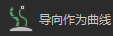
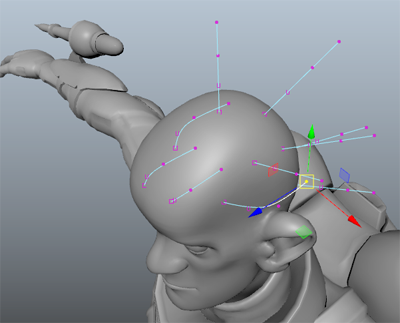
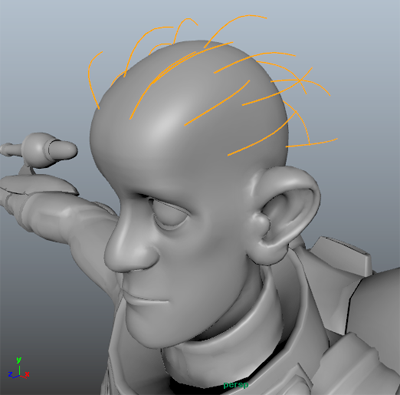

在工作流的此部分，您应该了解头发样式的基本形状。您可以使用 XGen “工具”(Utilities)，例如“导向作为曲线”(Guides As Curves)或“晶格”(Lattice)，以从导向生成基本形状。
提示： 修改导向之前，通过单击“预览”(Preview)
旁边的此图标 ，然后关闭“自动更新预览”(Update Preview Automatically)来禁用预览。通过单击 清除预览。这使您在使用导向时能更清楚地看到这些导向。
- 在“大纲视图”(Outliner)中，
 -选择所有导向。
-选择所有导向。
- 在“XGen”窗口中，单击“工具”(Utilities)选项卡。
- 在“工具”(Utilities)下，单击  以选择“导向作为曲线”(Guides As Curves)工具。
此工具允许您成形导向作为 NURBS 曲线。
- 在“导向作为曲线”(Guides As Curves)下，单击“修改为曲线”(Modify As Curves)。
将为每个导向创建临时 NURBS 曲线。
- 选择曲线 CV，然后使用“移动工具”(Move Tool)创建头发样式的基本形状。
提示： 如果在操纵曲线 CV 时误选了网格，您可能会丢失曲线上的组件模式选择。如果您在获取所需形状时遇到问题，请通过增加导向的 CV 计数将控制顶点添加到导向中。
如果发生这种情况，请单击“接受”(Accept)保存已修改的曲线。选择仍需要成形的导向，然后单击“修改为曲线”(Modify As Curves)。
- （可选）若要增加导向 CV 计数，请在“基本体”(Primitives)选项卡的“基本体属性”(Primitives Attributes)部分中，单击“重建”(Rebuild)，然后在“重建导向”(Rebuild Guides)窗口中增加 CV 计数值。
-
导向成形后，找到并展开“大纲视图”(Outliner)中的 xgCurveFromGuide 组，并选择所有 _tempCurves 对象。
- 单击“接受”(Accept)。
Maya 会将曲线形状应用于导向，并删除临时曲线。
注： 您可以通过 -单击导向，并从出现的菜单中选择“导向控制点”(Guide Control Points)来分别成形导向。
-单击导向，并从出现的菜单中选择“导向控制点”(Guide Control Points)来分别成形导向。
- 导向处于选中状态时，单击此图标 将其位置和形状镜像到网格的另一侧。
提示： 如果需要创建不对称的头发样式，您可以在镜像导向后重新定形那些导向。
- 单击预览图标 查看生成的样条线。
提示： 完成成形导向后，可以通过单击 将其隐藏。
请注意，样条线已覆盖头皮区域，但扩散得太薄。增加“密度”(Density)属性以逐面添加更多样条线并重新预览描述。
- 在“生成器属性”(Generator Attributes)部分中，将“密度”(Density)设置为 25 和 30 之间的值，然后预览描述。
完成基本头发样式后，可以通过设置宽度并添加锥化来修改基本体属性，以便样条线看起来更像头发。
设置样条线的“宽度”(Width)和“锥化”(Taper)
- 在“XGen”窗口中，单击“基本体”(Primitives)选项卡。
- 在“基本体属性”(Primitive Attributes)部分中，设置以下内容：
- “宽度”(Width)设置为 0.03 和 0.08 之间的值。
- “锥化”(Taper)设置为 0.7 和 1.0 之间的值。
- “锥形起点”(Taper Start)设置为 0.3。